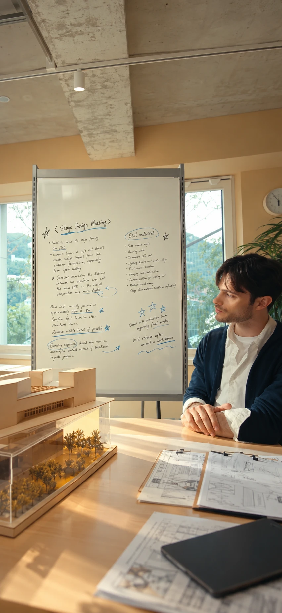

Smart Glass View
Galaxy의 Smart Glass View를 미리 체험해보세요. 실제 기기 대신 화면으로 Smart Glass View의 기능을 살펴보는 프로토타입입니다.
← 홈으로 돌아가기어떤 상황을 체험해보실래요?

카메라를 준비하고 있어요…
2026년 10월 19일 오후 2:20
Stage Design Meeting
✦ Gemini 요약핵심 포인트
- 무대가 평평해 보이는 문제: 프레젠터 영역과 메인 LED 사이 거리를 넓혀 깊이감 확보
- 메인 LED 크기: 약 24m × 8m (구조 검토 후 최종 치수 확정)
- 메인 LED의 보이는 베젤 최소화 방안 검토
- 오프닝: 기존 키노트 그래픽 대신 애니모픽 콘텐츠 활용
미결정 사항
- 측면 스크린 각도, 가로 폭, 투명 LED 적용 여부
- 객석 조명 밀도, 최종 스피커 위치, 오프닝 카메라 위치
- 제품 공개 타이밍, 무대 바닥 소재
다음 액션
- 제작팀과 최종 렌더 확인
- 영상 공개 후 애니메이션 작업 시작